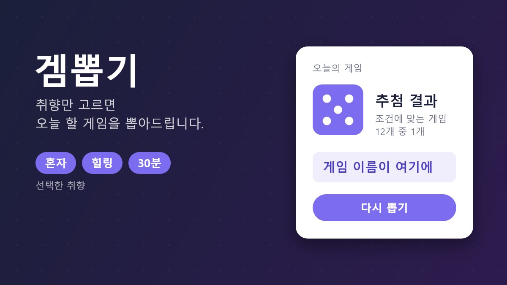

서비스 소개
뭐 할지 고르다 시간만 보내는 게이머를 위해
게임은 많은데 뭘 할지 못 정해서 라이브러리만 뒤지다 끄는 날이 많습니다.
겜뽑기는 장르·분위기·플레이 시간 같은 취향 몇 가지만 고르면 조건에 맞는 게임 중 하나를 추첨해서 바로 정해줍니다.

주요 기능
-
취향 고르기
장르·분위기·플레이 시간을 골라 조건에 맞는 게임만 남깁니다.
-
랜덤 뽑기
조건에 맞는 게임 중 하나를 추첨해 고민 없이 정해줍니다.
-
뽑은 게임 기록
뽑았던 게임과 평가를 남겨 다음 추천에 반영합니다.
이용 방법
- 오늘 하고 싶은 게임의 취향(장르·분위기·플레이 시간)을 고릅니다.
- 게임 뽑기 버튼을 눌러 추첨된 게임을 확인합니다.
- 마음에 들면 바로 플레이하고, 아니면 다시 뽑습니다.
게임 뽑기
취향 키워드를 입력하고 버튼을 누르면 조건에 맞는 게임 중 하나를 뽑아드립니다.